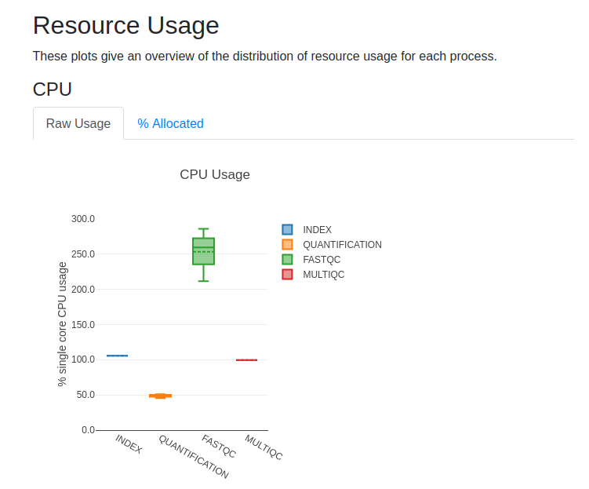

2.5 Productionising our workflow
Learning objectives
- Configure Nextflow workflows to run on multiple samples
- Enable and interpret Nextflow's inbuilt reports
- Implement the
tagdirective to label tasks for better tracking and profiling - Configure a Nextflow workflow to use multiple CPUs for a process
Now that we have a working pipeline on a single-sample, we will update it to take multiple samples and introduce Nextflow concepts that not only help with understanding and profiling the pipeline but also set the stage for productionising it.
We will focus on making the workflow scalable, robust, and efficient for real-world data processing. Key productionisation practices include:
- Automating tasks
- Handling errors gracefully
- Optimising resource usage
- Ensuring reproducibility.
These steps ensure that the pipeline can be reliably used in more complex scenarios, like when processing multiple samples in parallel.
2.5.1 Labeling tasks with the tag directive
The tag process directive allows you to add a custom label, or tag, to each task that gets executed. It is useful for identifying what is being run when the workflow is being executed in a bit more detail. It is especially helpful showing you what is being run when we run multiple samples, and for profiling later.
Add the following tag directives to your existing FASTQC and
QUANTIFICATION processes.
For FASTQC:
process FASTQC {
tag "fastqc on ${sample_id}"
container "quay.io/biocontainers/fastqc:0.12.1--hdfd78af_0"
publishDir "results", mode: 'copy'
And for QUANTIFICATION:
process QUANTIFICATION {
tag "salmon on ${sample_id}"
container "quay.io/biocontainers/salmon:1.10.1--h7e5ed60_0"
publishDir "results", mode: 'copy'
The tags we just added indicates what program is being run (fastqc or
salmon), and on which sample (${sample_id}) it is being run on.
Run the pipeline with the updated tags:
The output should look similar to:
Launching `main.nf` [distraught_bell] DSL2 - revision: dcb06191e7
executor > local (5)
[aa/3b8821] INDEX | 1 of 1, cached: 1 ✔
[c2/baa069] FASTQC (fastqc on gut) | 1 of 1, cached: 1 ✔
[ad/e49b20] QUANTIFICATION (salmon on gut) | 1 of 1, cached: 1 ✔
[a3/1f885c] MULTIQC | 1 of 1, cached: 1 ✔
No new tasks were run, but FASTQC and QUANTIFICATION processes now have
labels appended in the execution output.
2.5.2 Using a samplesheet with multiple samples
Recall that the samplesheet is used to control which files/data are analysed by
the workflow. Inspect data/samplesheet_full.csv.
| samplesheet_full.csv | |
|---|---|
Compared to the samplesheet we have been using data/samplesheet.csv, this one
contains two additional lines for the liver and lung paired reads.
Next we will run the workflow with all three samples by overwriting the default
input for reads with data/samplesheet_full.csv using the double hyphen
approach --reads in the run command.
Run the workflow:
Your output should look similar to:
Launching `main.nf` [distraught_bell] DSL2 - revision: dcb06191e7
executor > local (5)
[de/fef8c4] INDEX | 1 of 1, cached: 1 ✔
[4e/b4c797] FASTQC (fastqc on liver) | 3 of 3, cached: 1 ✔
[36/93c8b4] QUANTIFICATION (salmon on lung) | 3 of 3, cached: 1 ✔
[e7/5d91ea] MULTIQC | 1 of 1 ✔
There are two new tasks run for FASTQC and QUANTIFICATION. Our newly added
tags indicate which samples they were run on - either lung or liver reads!
Note
Updating the params.reads definition in your main.nf script can save
having to add the --reads flag every time you want to run it with a
different samplesheet.
Advanced Exercise
- Update the workflow scope to inspect the output of the
reads_inchannel (i.e. with.view()) - Run the workflow with
samplesheet_full.csv
What has changed with what the reads_in channel is emitting?
Solution
Viewing reads_in:
// Define the fastqc input channel
reads_in = Channel.fromPath(params.reads)
.splitCsv(header: true)
.map { row -> [row.sample, file(row.fastq_1), file(row.fastq_2)] }
reads_in.view()
// Run the fastqc step with the reads_in channel
FASTQC(reads_in)
Run the workflow:
Your output should look something like:
executor > local (5)
[de/fef8c4] INDEX | 1 of 1, cached: 1 ✔
[4e/b4c797] FASTQC (fastqc on liver) | 3 of 3, cached: 3 ✔
[36/93c8b4] QUANTIFICATION (salmon on lung) | 3 of 3, cached: 3 ✔
[e7/5d91ea] MULTIQC | 1 of 1 ✔
[gut, .../data/ggal/gut_1.fq, .../data/ggal/gut_2.fq]
[liver, .../data/ggal/liver_1.fq, .../data/ggal/liver_2.fq]
[lung, .../data/ggal/lung_1.fq, .../data/ggal/lung_2.fq]
There are now a total of three tuples emitted separately for each sample.
When passed into FASTQC and QUANTIFICATION, each tuple is processed
separately in independent tasks.
Remove reads_in.view() before proceeding.
2.5.3 An introduction to configuration
In this section, we will explore how Nextflow workflows can be configured to utilise the computational resources available. Whilst there are many ways to configure Nextflow workflows (especially on HPC clusters), we will focus on increasing the number of CPUs used to speed up tasks.
Some bioinformatics tool, like FastQC, support multithreading to speed up
analyses. From the fastqc --help command, you'll notice the following option:
This means we can configure the number of threads (or CPUs) that FastQC uses
to process multiple files in parallel to speed up the analysis. In Nextflow,
we control this through the
cpus directive.
Recall that our FASTQC takes as input the reads_in channel which emits two
.fastq files. We will configure the process to use 2 CPUs so each file gets
run on 1 CPU each (the maximum CPUs fastqc will use per file), simulataneously.
In your main.nf script, update the script definition in the FASTQC process
to add the multithreading option:
script:
"""
mkdir fastqc_${sample_id}_logs
fastqc --outdir "fastqc_${sample_id}_logs" -f fastq $reads_1 $reads_2 -t $task.cpus
"""
- The
task.cpusvariable is automatically populated with the number of CPUs allocated to the task based on the Nextflow configuration. By default this is 1.
Next, we need to update our nextflow.config file to configure the number of
CPUs to be used. To allow each FastQC process to use 2 CPUs, update the
config file as follows:
The -t $task.cpus argument will populate as -t 2 when we run the workflow next.
Before we do, we will explore Nextflow's built-in reporting system to assess resource usage.
2.5.4 Inspecting workflow performance
When running workflows, it is helpful to understand how each part of your workflow is using resources like CPUs, memory, and the time taken to complete. Nextflow can generate text-based and visual reports that give you clear picture of how your workflow ran and identify areas for improvement.
We will explore some of Nextflow's built-it in tools that can show these important details of how tasks ran.
To enable these reports, add the following to your nextflow.config file:
process.cpus = 2
docker.enabled = true
// enable reporting
dag.enabled = true
report.enabled = true
timeline.enabled = true
trace.enabled = true
Run the workflow. To assess the resource usage all processes need to be run
again so -resume should not be used. (If we resume now, it will still
appear as a cached run, with limited information).
Inspect your project directory. You should have 3 .html files and a .txt
file with matching timestamps. A summary of the different reports are included
in the table below. For a detailed description of each report see the Nextflow
documentation on reports.
| Report type | Description |
|---|---|
dag |
A high-level graph that shows how processes and channels are connected to each other. |
report |
A visual summary of the time and resources used grouped by process. |
timeline |
A Gannt chart that shows when each task started and ended. |
trace |
A detailed text log with the time and resources used by each task. |
Complete the following steps in the exercise to view the report file report-*.html in your local browser.
Exercise
- In the VSCode file explorer sidebar, locate the report file (e.g.
report-*.html) - Right click on the file and select "Download" to save it to your local computer.
- Open the
report-*.htmlin a browser. - Navigate to "Resource Usage" -> "CPU".
- Hover over the
FASTQCbar chart and note themeanCPU usage.
Poll
What was the mean CPU usage for your FASTQC process?
Solution
In this report, a mean of 2.53 CPUs were utilised by the FASTQC process
across the 3 samples. This value will slightly differ across runs.

You have successfully run, configured, and profiled a multi-sample workflow!
Summary
In this lesson you have learned:
- How to add custom labels with process tags
- How to use
task.cpusto enable multithreading within processes - How to configure process resources with
nextflow.config - How to enable and view Nextflow workflow reports